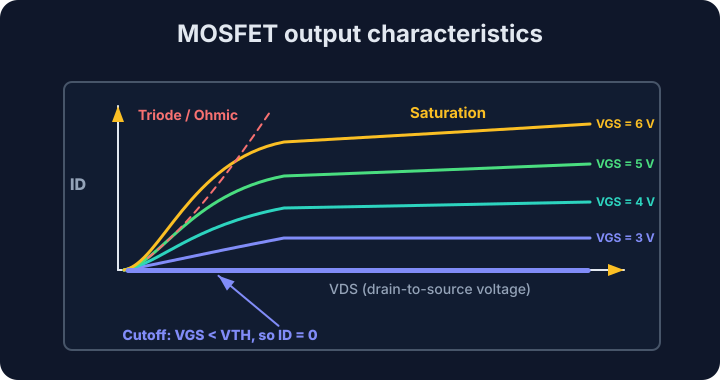
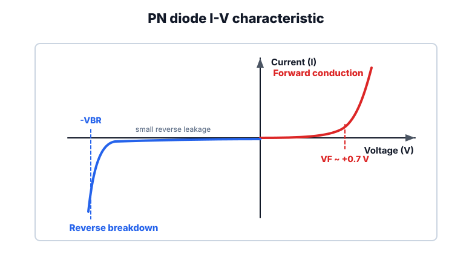
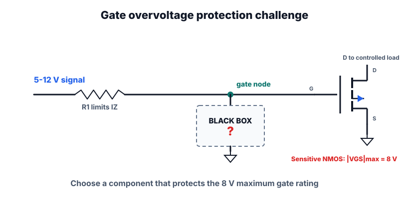
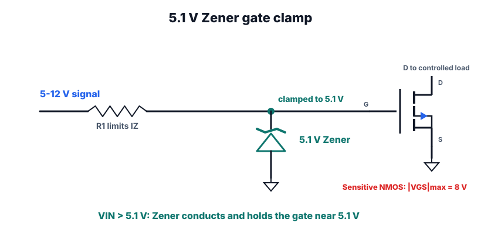
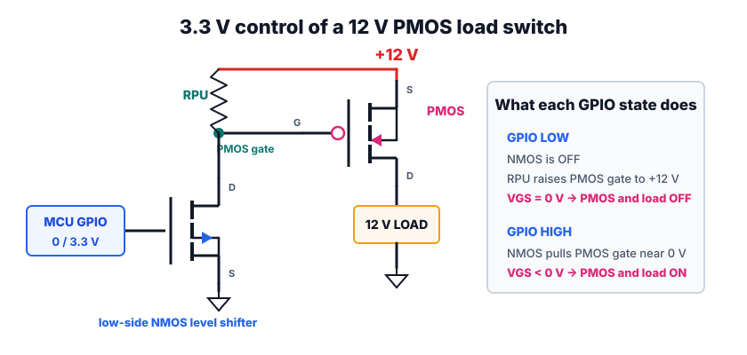

semiconductor-devices-mosfets-draw-the-schematic-symbols-for-an-nmos-a / image_1
NMOS and PMOS symbols mosfet_symbols
Prompt
Side-by-side schematic symbols for an NMOS and a PMOS. Left (NMOS): The source arrow points OUT, with text indicating it connects to Ground and turns ON when Gate = HIGH. Right (PMOS): The source arrow points IN, with a tiny inversion bubble on the gate, with text indicating it connects to Vcc and turns ON when Gate = LOW.
semiconductor-devices-mosfets-draw-the-i-v-characteristic-curve-of-an / image_1
MOSFET output characteristics mosfet_characteristics

Prompt
A graph with V_DS on the x-axis and I_D on the y-axis. There are multiple curved lines starting from the origin, representing increasing V_GS values. A dashed parabolic curve separates the steep, linear left side of the graph (labeled "Triode / Ohmic Region") from the flat, horizontal right side of the graph (labeled "Saturation Region"). The bottom axis at 0A is labeled "Cutoff".
semiconductor-devices-diodes-draw-the-i-v-characteristic-curve-for-a-s / image_1
PN diode I-V characteristic pn_diode_iv

Prompt
A graph with Voltage (V) on the x-axis and Current (I) on the y-axis. The line stays flat at 0A for negative voltages, continues flat past the origin, and then sharply curves upward exponentially at a point labeled "V_f (~0.7V)" (Forward Bias). On the far left of the negative x-axis, the line drops straight down vertically at a point labeled "V_br" (Reverse Breakdown).
thinking-protection-circuits-image-1-a-control-signal-coming-from-a-va / image_1
Gate overvoltage protection challenge zener_gate_clamp_question

Prompt
A schematic showing a '5V-12V Signal' entering a resistor (R1). After R1, the line splits: one path goes to a MOSFET gate, and the other path goes into a dashed 'Black Box' connected to ground.
thinking-protection-circuits-image-1-a-control-signal-coming-from-a-va / image_2
5.1 V Zener gate clamp zener_gate_clamp_answer

Prompt
The same schematic, but the Black Box is replaced with a Zener diode (the flat cathode bar faces up toward the gate line, and the triangle anode points down to ground).
thinking-system-architecture-you-need-to-use-a-3-3v-mcu-gpio-to-enable / image_1
3.3 V control of a 12 V PMOS load switch pmos_high_side_driver

Prompt
A schematic showing a 3.3V MCU GPIO driving the gate of a low-side NMOS. The NMOS source is Ground. The NMOS drain connects to the gate of a high-side PMOS. The PMOS source connects to 12V, its drain connects to the Load, and a pull-up resistor connects the PMOS gate to 12V.